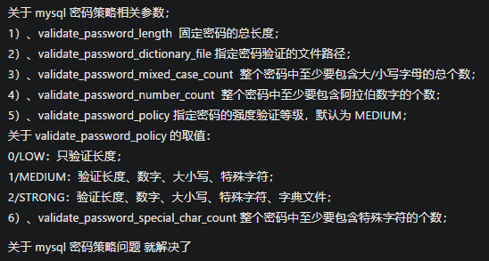
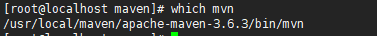
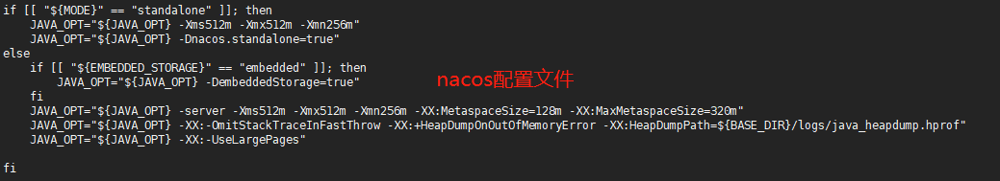

部署文档
安装Java

上传到linux上，解压压缩包
1tar -zxvf jdk-8u171-linux-x64.tar.gz -C /usr/local/java/设置环境变量
xxxxxxxxxx811. 打开文件： vi /etc/profile22. 在末尾加上：3export JAVA_HOME=/usr/local/java/jdk1.8.0_3014export JRE_HOME=${JAVA_HOME}/jre5export CLASSPATH=.:${JAVA_HOME}/lib:${JRE_HOME}/lib6export PATH=${JAVA_HOME}/bin:$PATH73. 刷新环境变量：source /etc/profile84. 添加软链接： ln -s /usr/local/java/jdk1.8.0_301/bin/java /usr/bin/java查看是否安装好：
java -version
安装Mysql
执行命令
xxxxxxxxxx31wget http://dev.mysql.com/get/mysql80-community-release-el7-3.noarch.rpm2rpm -ivh mysql80-community-release-el7-3.noarch.rpm3yum install mysql-community-server重启Mysql并且设置密码
xxxxxxxxxx121systemctl restart mysqld2// 查看默认密码3grep 'temporary password' /var/log/mysqld.log4mysql -u root -p登录5// 先修改密码为6mysql> ALTER USER 'root'@'localhost' IDENTIFIED BY 'Aa1459608577/';7// 查看密码验证规则8mysql> SHOW VARIABLES LIKE 'validate_password%';9// 修改密码校验规则为LOW，修改密码校验长度为410mysql> set global validate_password.policy=LOW;11mysql> set global validate_password.length=4;12mysql> ALTER USER 'root'@'localhost' IDENTIFIED BY '1234';
配置Mysql
x1配置编码：mysql的配置文件在/etc/my.cnf，修改配置文件，在最后加入23[mysql]4default-character-set =utf8远程连接设置
xxxxxxxxxx121// 修改加密规则2ALTER USER 'root'@'localhost' IDENTIFIED BY '1234' PASSWORD EXPIRE NEVER;3ALTER USER 'root'@'localhost' IDENTIFIED WITH mysql_native_password BY '1234';4// 设置新密码5ALTER USER 'root'@'%' IDENTIFIED WITH mysql_native_password BY '1234';6// 修改权限7use mysql;8// 查看user表的root用户Host字段是localhost，说明root用户只能本地登录9select host, user, authentication_string, plugin from user;10update user set host='%' where user='root';11// 刷新权限即可12FLUSH PRIVILEGES;
安装Nginx
首先查看gcc是否安装, 没有安装则执行：
yum -y install gcc
安装插件：pcre，pcre-devel，zlib，openssl
xxxxxxxxxx11yum install -y pcre pcre-devel openssl openssl-devel gd gd-deve zlib zlib-devel下载Nginx并解压编译
xxxxxxxxxx61wget http://nginx.org/download/nginx-1.18.0.tar.gz2tar -zxvf nginx-1.9.9.tar.gz -C usr/local/java34cd /usr/local/java/nginx-1.9.9/5./configure6make && make install启动Nginx
xxxxxxxxxx21cd /usr/local/nginx/sbin2./nginx -c /usr/local/nginx/conf/nginx.conf配置文件
xxxxxxxxxx1211#user nobody;2worker_processes 1; #工作进程：数目。根据硬件调整，通常等于cpu数量或者2倍cpu数量。34#错误日志存放路径5#error_log logs/error.log;6#error_log logs/error.log notice;7#error_log logs/error.log info;89#pid logs/nginx.pid; # nginx进程pid存放路径101112events {13worker_connections 1024; # 工作进程的最大连接数量14}151617http {18include mime.types; #指定mime类型，由mime.type来定义19default_type application/octet-stream;2021# 日志格式设置22#log_format main '$remote_addr - $remote_user [$time_local] "$request" '23# '$status $body_bytes_sent "$http_referer" '24# '"$http_user_agent" "$http_x_forwarded_for"';2526#access_log logs/access.log main; #用log_format指令设置日志格式后，需要用access_log来指定日志文件存放路径2728sendfile on; #指定nginx是否调用sendfile函数来输出文件，对于普通应用，必须设置on。29如果用来进行下载等应用磁盘io重负载应用，可设着off，以平衡磁盘与网络io处理速度，降低系统uptime。30#tcp_nopush on; #此选项允许或禁止使用socket的TCP_CORK的选项，此选项仅在sendfile的时候使用3132#keepalive_timeout 0; #keepalive超时时间33#keepalive_timeout 65;3435#gzip on; #开启gzip压缩服务3637#虚拟主机38server {39listen 80; #配置监听端口号40server_name localhost; #配置访问域名，域名可以有多个，用空格隔开4142#charset koi8-r; #字符集设置4344#access_log logs/host.access.log main;4546location / {47root html;48index index.html index.htm;49}50#错误跳转页51#error_page 404 /404.html;5253# redirect server error pages to the static page /50x.html54#55error_page 500 502 503 504 /50x.html;56location = /50x.html {57root html;58}5960# proxy the PHP scripts to Apache listening on 127.0.0.1:8061#62#location ~ \.php$ {63# proxy_pass http://127.0.0.1;64#}6566# pass the PHP scripts to FastCGI server listening on 127.0.0.1:900067#68#location ~ \.php$ { #请求的url过滤，正则匹配，~为区分大小写，~*为不区分大小写。69# root html; #根目录70# fastcgi_pass 127.0.0.1:9000; #请求转向定义的服务器列表71# fastcgi_index index.php; # 如果请求的Fastcgi_index URI是以 / 结束的, 该指令设置的文件会被附加到URI的后面并保存在变量$fastcig_script_name中72# fastcgi_param SCRIPT_FILENAME /scripts$fastcgi_script_name;73# include fastcgi_params;74#}7576# deny access to .htaccess files, if Apache's document root77# concurs with nginx's one78#79#location ~ /\.ht {80# deny all;81#}82}838485# another virtual host using mix of IP-, name-, and port-based configuration86#87#server {88# listen 8000;89# listen somename:8080;90# server_name somename alias another.alias;9192# location / {93# root html;94# index index.html index.htm;95# }96#}979899# HTTPS server100#101#server {102# listen 443 ssl; #监听端口103# server_name localhost; #域名104105# ssl_certificate cert.pem; #证书位置106# ssl_certificate_key cert.key; #私钥位置107108# ssl_session_cache shared:SSL:1m;109# ssl_session_timeout 5m;110111# ssl_ciphers HIGH:!aNULL:!MD5; #密码加密方式112# ssl_prefer_server_ciphers on; # ssl_prefer_server_ciphers on; #113114115# location / {116# root html;117# index index.html index.htm;118# }119#}120121}
安装Maven
下载包并解压
xxxxxxxxxx21wget https://mirrors.tuna.tsinghua.edu.cn/apache/maven/maven-3/3.6.3/binaries/apache-maven-3.6.3-bin.tar.gz2tar -zxvf apache-maven-3.6.3-bin.tar.gz -C /usr/local/配置环境变量
xxxxxxxxxx31vi /etc/profile2在最后加入： export PATH=$PATH:/usr/local/maven/apache-maven-3.6.3/bin3刷新配置： source /etc/profile查看是否安装好，执行
which mvn出现如下图即安装成功
安装Nacos集群
安装Nacos解压即可
xxxxxxxxxx11tar -zxvf nacos-server-2.0.3.tar.gz新建nacos_config数据库，导入nacos脚本

修改nacos数据源配置

修改集群文件
xxxxxxxxxx51cp cluster.conf.example cluster.conf2配置ip3192.168.2.189:88484192.168.2.1:88485192.168.2.128:8848每台nacos都做如上配置再开放端口（每台nacos的端口，以及nginx的端口）
配置并启动nginx
xxxxxxxxxx141upstream nacos-cluster {2server 192.168.2.128:8848;3server 192.168.2.1:8848;4server 192.168.2.189:8848;5}67server {8listen 8748;9server_name 192.168.2.189;1011location / {12proxy_pass http://nacos-cluster;13}14}springboot项目配置
xxxxxxxxxx131spring2application3nameksn-gateway4cloud5nacos6discovery7server-addr192.168.2.1898748 # nginx地址8namespaceksn9config10server-addr192.168.2.1898748 # nginx地址11file-extensionyaml # 指定格式12groupDEFAULT_GROUP #指定分组13namespaceksn
安装单机Seata
下载解压包
xxxxxxxxxx21wget https://github.com/seata/seata/releases/download/v1.4.2/seata-server-1.4.2.tar.gz2tar -zxvf seata-server-1.4.2.tar.gz使用db的方式记录日志，初始化数据库，新建seata库，然后数据库脚本在
https://github.com/seata/seata/tree/1.2.0/script/server/db, 初始化即可。配置seata，修改file.conf文件如下：

修改registry.conf文件改成nacos配置以及配置nacos(application改成serverAddr的详细解释看bug.md)

初始化配置信息，config.txt文件在github上有，下面是做的修改的
file.conf为配置文件。此处将file.conf的信息配置入nacos中，所有file.conf文件可以不做配置。但是如果需要将file中的信息配置入nacos，还需两个文件config.txt，和nacos-config.sh。
xxxxxxxxxx21cd /usr/local/seata/seata-server-1.4.2/2vim config.txtxxxxxxxxxx721transport.type=TCP2transport.server=NIO3transport.heartbeat=true4transport.enableClientBatchSendRequest=false5transport.threadFactory.bossThreadPrefix=NettyBoss6transport.threadFactory.workerThreadPrefix=NettyServerNIOWorker7transport.threadFactory.serverExecutorThreadPrefix=NettyServerBizHandler8transport.threadFactory.shareBossWorker=false9transport.threadFactory.clientSelectorThreadPrefix=NettyClientSelector10transport.threadFactory.clientSelectorThreadSize=111transport.threadFactory.clientWorkerThreadPrefix=NettyClientWorkerThread12transport.threadFactory.bossThreadSize=113transport.threadFactory.workerThreadSize=default14transport.shutdown.wait=315## 这里需要修改为对应自己的事物的名ksn_group16service.vgroupMapping.ksn_group=default17# 这里需要修改为 Seata的网络访问地址18service.default.grouplist=192.168.2.189:809119service.enableDegrade=false20service.disableGlobalTransaction=false21client.rm.asyncCommitBufferLimit=1000022client.rm.lock.retryInterval=1023client.rm.lock.retryTimes=3024client.rm.lock.retryPolicyBranchRollbackOnConflict=true25client.rm.reportRetryCount=526client.rm.tableMetaCheckEnable=false27client.rm.sqlParserType=druid28client.rm.reportSuccessEnable=false29client.rm.sagaBranchRegisterEnable=false30client.tm.commitRetryCount=531client.tm.rollbackRetryCount=532# 这里需要修改成db33store.mode=db34store.file.dir=file_store/data35store.file.maxBranchSessionSize=1638436store.file.maxGlobalSessionSize=51237store.file.fileWriteBufferCacheSize=1638438store.file.flushDiskMode=async39store.file.sessionReloadReadSize=10040## 修改数据库配置41store.db.datasource=druid42store.db.dbType=mysql43store.db.driverClassName=com.mysql.cj.jdbc.Driver44store.db.url=jdbc:mysql://192.168.2.189:3306/seata?useUnicode=true45store.db.user=root46store.db.password=123447store.db.minConn=548store.db.maxConn=3049store.db.globalTable=global_table50store.db.branchTable=branch_table51store.db.queryLimit=10052store.db.lockTable=lock_table53store.db.maxWait=500054server.recovery.committingRetryPeriod=100055server.recovery.asynCommittingRetryPeriod=100056server.recovery.rollbackingRetryPeriod=100057server.recovery.timeoutRetryPeriod=100058server.maxCommitRetryTimeout=-159server.maxRollbackRetryTimeout=-160server.rollbackRetryTimeoutUnlockEnable=false61client.undo.dataValidation=true62client.undo.logSerialization=jackson63server.undo.logSaveDays=764server.undo.logDeletePeriod=8640000065client.undo.logTable=undo_log66client.log.exceptionRate=10067transport.serialization=seata68transport.compressor=none69metrics.enabled=false70metrics.registryType=compact71metrics.exporterList=prometheus72metrics.exporterPrometheusPort=9898切换到bin目录创建导入脚本，链接，然后授权并执行
xxxxxxxxxx21chmod +x nacos-config.sh2./nacos-config.sh如果因为内存不足启动不了，使用top命令查看是nacos内存太高，修改nacos的startup.sh文件，把启动参数2g改成512m即可
xxxxxxxxxx11./seata-server.sh -p 8091 -h 192.168.2.189 -m file &> seata.log &- -p 指定启动seata server的端口号。
- -h 指定seata server所绑定的主机。
- -m 事务日志、事务执行信息存储的方式，目前支持file（文件方式）、db（数据库方式，建表语句请查看config/db_store.sql、config/db_undo_log.sql）

集群启动
xxxxxxxxxx41./seata-server.sh -p 8092 -h 192.168.2.189 -n 1 -m file &> seata.log & 启动第一台seata2./seata-server.sh -p 8092 -h 192.168.2.189 -n 2 -m file &> seata.log & 启动第二台seata34-n：Server node。在多个 TC Server 时，需区分各自节点，用于生成不同区间的 transactionId 事务编号，以免冲突